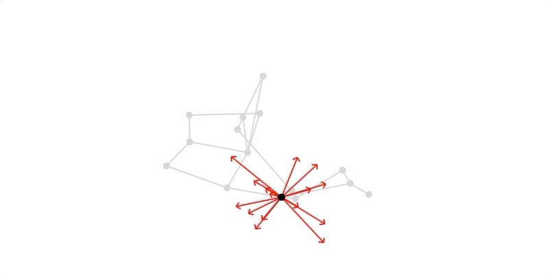
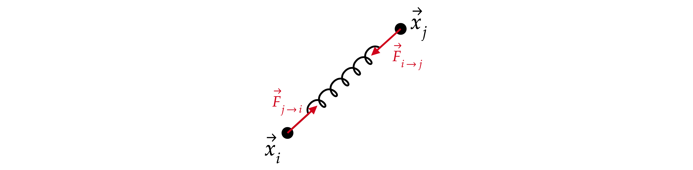
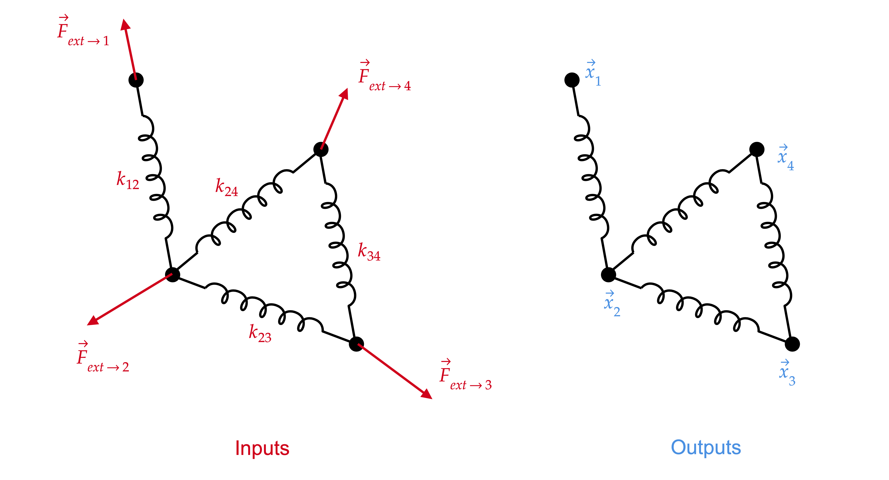
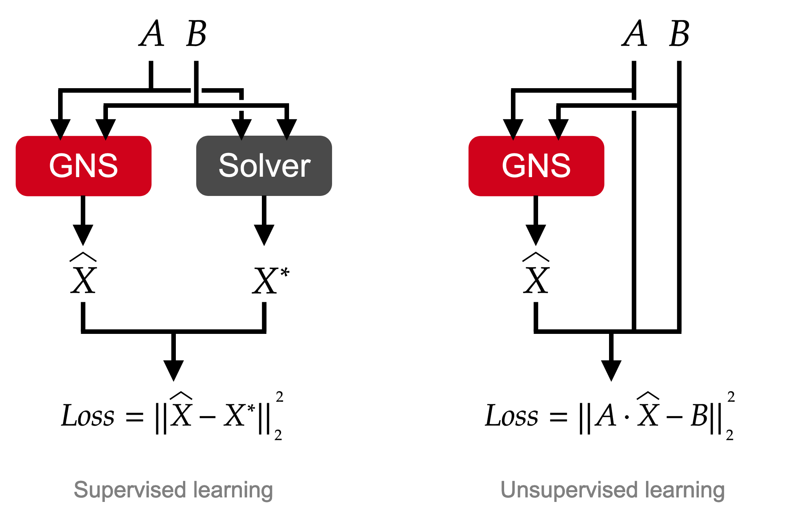

Introducing the Graph Neural Solver
Overview
Many real-world problems rely on complex graphical structures: electricity transportation, roads, social interactions, finite-volume systems, etc. In each of these, we have a set of fundamental entities (nodes, or particles), who interact through fundamental interactions. Not every pair of nodes are directly interconnected, but they may be linked through some other nodes. One may want to develop a way to predict the behavior of these systems in order to control them. For instance, in the electricity transportation network, consumers and producers are interconnected through power lines. Depending on how much power is being inputed or outputed across the grid, and where, it can cause some congestion. In order to prevent it, people that manage the power transportation network, need to be able to accurately determine if there will be a congestion in the future, based on the consumption predictions. This means that they need a good model of the power grid.
We propose a novel approach to predict the solution of a system of linear or non-linear equations that rely on Graph Neural Networks. In this blog post, we will see how it works on a very simple and visual case : a linear system. Using such a complex neural network algorithm is indeed a bit "overkill" for this task. As will be descibed hereafter, a simple matrix inversion provides a solution. However, our method shows its real interest when applied to much larger or more complex problems (non-linear in the case of power systems), and the following application only serves as an illustration.
This approach has been developped during my first year of PhD at RTE and LRI (see Graph Neural Solver for Power Systems and Neural Network for Power Flow: Graph Neural Solver).
The code developped for this blog post is available on here, feel free to take a look. If you have any question or observation, contact me at balthazar.donon@rte-france.com. For the sake of conciseness, I won't dive into every detail (theoretical or experimental), so if you feel something is not clear, or would deserve a better explaination, let me know!

Problem definition
For now, let's focus on a quite simple problem : a set of interacting particles that move in a 2D plane, and that are linked through a set of springs (with varying stiffnesses). We have a set of \(N\) particles, each defined by its 2-dimensional coordinates \( \overrightarrow{x}_i = (x_i, y_i) \). Some particles are linked to others through a spring-like interaction.

The forces are symmetrical and have the following expressions:
\[ \overrightarrow{F}_{i \rightarrow j} = k_{ij} (\overrightarrow{x}_i - \overrightarrow{x}_j) \] \[ \overrightarrow{F}_{j \rightarrow i} = k_{ij} (\overrightarrow{x}_j - \overrightarrow{x}_i) \]
In addition to the interaction forces applied to each particle, there are external forces \( \overrightarrow{F}_{ext \rightarrow i}\). A particle \(i\) is at an equilibrium if : \[ \overrightarrow{F}_{ext \rightarrow i} + \sum_{j\in\mathcal{N}(i)} \overrightarrow{F}_{j \rightarrow i} = \overrightarrow{0}\] where \(\mathcal{N}(i)\) denotes the set of direct neighbors of node \(i\).
Our goal is thus to find the position of equilibrium of every node, given as an input the external forces and the network of springs that link particles.

As described in the figure above, the inputs of our problem are the external forces and the line characteristics (stiffness, in the case of springs), and the outputs are the particles' positions of equilibrium. More interestingly, one can observe that not all particles are interacting: particles \(1\) and \(3\) for instance are not linked by a spring, although there is an indirect interaction through particle \(2\).
It is possible to solve separately the two dimensions of the problem (by linearity of the interaction forces), so we will limit ourselves to solving :
\[ \text{find } (x_1, \dots, x_N) \in \mathbb{R}^N \text{ such that }\forall i \in [1, N], F_{ext \rightarrow i} + \sum_{j \in \mathcal{N}(i)} k_{ij} (x_j - x_i) = 0 \]
In other words, find the position of every particle such that all of them will be at equilibrium at the same time. Let \(X = (x_1, \dots, x_N) \in \mathbb{R}^N\), \(B = (F_{ext \rightarrow 1}, \dots, F_{ext \rightarrow N})\), and \(A \in \mathbb{R}^{N\times N}\) a matrix such that :
\[A_{ij} = k_{ij} \text{ if } i \neq j \text{ and there is an edge between }i\text{ and }j \] \[A_{ij} = -\sum_{l\in \mathcal{N}(i)} k_{il} \text{ if } i = j \] \[A_{ij} = 0 \text{ if } i \neq j \text{ and there is no edge between }i\text{ and }j \]
We can thus rephrase our problem the following way :
\[ \text{find } X \in \mathbb{R}^N \text{ such that } AX+B=0\]
Classical approach
Indeed this is a very basic linear system. It can be solved by a matrix inversion. In our case, the matrix \(A\) is by construction a laplacian matrix, which means that it has at least one zero eigenvalue. Assuming the graph is connected, there is only one such eigenvalue. In other words, there is an infinity of solutions to the equation \(AX+B=0\). If you take any solution to this equation and apply any translation, it will remain a solution. Our problem is underconstrained, and one needs to remove one degree of freedom, so that there will be only one solution. The most common approach is thus to set \(x_1 = 0\), and to authorize node \(1\) to be out of equilibrium. The resulting system is described by
\[ \text{find } X' \in \mathbb{R}^{N-1} \text{ such that } A'X'+B'=0\]
where \(X' = (x_2, \dots, x_N)\), \(B' = (F_{ext \rightarrow 2}, \dots, F_{ext \rightarrow N})\), and \(A'\) is the result of deleting the first row and the first column from matrix \(A\). Now our system is sufficiently constrained (provided that the network is connected), and the inverse of matrix \(A'\) does exist and can be computed! The solution is thus provided by :
\[ X' = -A'^{-1}B'\]
and one just needs to reintroduce the first component (which has been set to zero) to have a solution of the problem.
This method can only solve linear systems, and more complex approaches such as Newton-Raphson are required for non-linear equations.
Graph Neural Solver
Now that we have seen the canonical approach to solving this linear system, let's introduce our (more exotic) Graph Neural Solver. It heavily relies on Graph Neural Networks.
Neural networks
Neural networks are a class of parametric functions that are used for classification and regression tasks. One of the reasons they have become so popular in the past decade is that they are extremely expressive and are able to build abstract representations of complex data.
The only piece of information that is worth keeping in mind for our problem, is that neural nets are just parametric functions. They are parameterized by a set of weights. The goal is to minimize a Loss function (for instance the distance between the prediction and the ground truth) by changing the weights of the neural networks. This process is performed on a training dataset (for which we have access to the ground truth), and if everything goes well we can perform predictions on a test dataset (for which we do not have the ground truth).
This blog post assumes some knowledge about neural networks functions, as well as the way they are trained. If you want to dive deeper into neural networks, I would personally recommend the book Deep Learning by A. Courville, I. Goodfellow and Y. Bengio, or the CS230 class from Stanford University.
In the following, we will consider neural networks as small elementary learning blocks that are trained by stochastic gradient descent.
Exploiting the graphical structure of the problem
If we wanted to train a neural network to solve a system of linear equations, the most simple approach would be to use a fully connected neural network. However, it wouldn't respect one basic property of our problem : the ordering of inputs should not affect the prediction.
For instance if we switch the index of two particles, it does not change the problem we are trying to solve. One way of dealing with this property is to use Graph Neural Networks. They are a class of neural networks that take into account the graphical structure of the input so that the index ordering has no actual impact on the prediction.
If you wish to have more informations about this class of neural network architectures, I recommend taking a look at Thomas Kipf's blog.
Minimizing the violation of the target equation
One of the main novelty of our paper Neural Network for Power Flow: Graph Neural Solver was to learn in an unsupervised fashion. Instead of minimizing the distance between the prediction and the output of another solver (whether it be a matrix inversion in the linear case, or a Newton Raphson method in the non-linear case), we now directly minimize the violation of the target equation caused by the prediction.

This allows to learn in a completely unsupervised fashion which may in some cases result in a significant gain in terms of computational speed during training. Moreover, our neural network architecture is no longer an imitation of a solver.
Graph Neural Solver architecture and method
To sum up the approach we are developping with the Graph Neural Solver : we want a neural network that is composed of basic neural network learning blocks, intricately laid out to respect the graph structure of the input data, and that minimizes the violation of the target equation during training.
The inputs are :
The outputs are :
The Graph Neural Solver architecture attributes to each particle a latent message \(H_i\), that is iteratively corrected in the following way:
\[ H_i^0 = (0, \dots, 0) \in \mathbb{R}^d \] \[ H_i^{k+1} = H_i^{k} + L_{k}(H_i^{k}, \sum_{j\in \mathcal{N}(i)} \phi_{k}(H_i^{k}, H_j^{k}, k_{ij}), B_i) \] \[ \hat{X}_i^{k} = H_i^k[0] \]
where \(L_k\) and \(\phi_k\) are trainable neural network blocks.
Basically, we initialize the latent message of each particle to a zero message. By the way, the dimension \(d\) of those messages are a hyperparameter of the architecture. We then update it, by gathering information from its direct neighbors (combined with the stiffness of each connection), and its own external force. The prediction \(\hat{X}_i^{k}\) is performed by taking only the first component of \(\hat{H}_i^{k}\). Indeed if we wanted to predict a 2D feature for each particle, then we would use the first two components. We iterate this correction process a finite number of times : \(K\), which is another hyperparameter of the architecture.
Since we have a different prediction after each correction update, it is possible to compute the violation of the target equation after each of these correction updates. We thus define \(loss_i^k\) to be the local violation of the target equation at particle \(i\), and after the correction update \(k\):
\[ loss_i^k = || B_i + \sum_{j\in \mathcal{N}(i)} k_{ij} (\hat{X}_j^{k} - \hat{X}_i^{k})||_2^2 \]
During training we thus use the following loss :
\[ Loss = \sum_{k=1}^K \gamma^{K-k} \left[ \frac{1}{N}\sum_{i}^N loss_i^k \right] \]
The term between brackets is simply the average over the whole network of the local losses. We then take a weighted sum of these losses across all the correction updates, by also giving a stronger emphasis to the last correction updates. \(\gamma\) is an hyperparameter of the training process.
Experiments
Dataset
The datasets used for training, validation and test have all been generated following the same process. The code I used is available here. The train set is composed of 100,000 datapoints. Each datapoint is composed of a random connected network (15 vertices, 20 edges), with stiffnesses uniformly sampled betwen 0.1 and 1. Each external force is uniformly sampled between -1 and 1. The graphs below consider the test set, which was never encountered during training.
Training
This instance of Graph Neural Solver has been trained on an NVIDIA GTX 960m during approximately 10 hours. I trained during 1,000,000 iterations with minibatches of 100 samples. The optimizer used is Adam with a learning rate of \(2 \times 10^{-3}\), and standard parameters from Tensorflow 1.14. The dicount factor \(\gamma\) is set to 0.95. There are \(K=15\) correction updates, the latent dimension is \(d=10\), and each neural network block has 3 hidden layers (with 10 hidden dimensions). The non linearity used is a leaky ReLU.
The learning curve is displayed below. The average loss after each correction update is displayed. Indeed, the closer you are to the final correction, the lower the loss.
Test
In my opinion, animations are always the best way to understand what is going on. You can find below two animations that give you a good grasp at how it works and how well it performs on the tet set. Press the play buttons of each animation, and feel free to zoom in, select frames, etc.
In the first animation, we have in light grey the actual solution of one instance of the problem. This is the ground truth, but keep in mind that our GNS never tries to imitate the ground truth (since it directly penalizes the violation of the target equation during training). In black is shown the prediction of the current correction update. Indeed it starts at zero, and then slowly moves to reach its final prediction at \(K=15\). It manages to get really close to the ground truth (although if you zoom in, you may observe some discrepency).
In the second animation is displayed a scatter plot of the predictions versus ground truth. The colors are in log scale. Ideally, if our predictor was perfect, we would have every point reach the diagonal \(x=y\) at the last update, which would mean that every prediction is the same as the ground truth. Actually, we are not so far from that, and we end up with a correlation between prediction and ground truth of 0.999!
Conclusion
We managed to build an alternative method for solving a system of springs. It relies on graph neural networks, and directly tries to minimize the violation of the target equation during training, which makes it a method that is completely independent from previous ones. However, this is a bit overkill for such a small and simple system. This was primarily developped to deal with power flow equations which are non linear, and that also rely on sparse graphical structures. More informations about this application setup can be found in my publications.